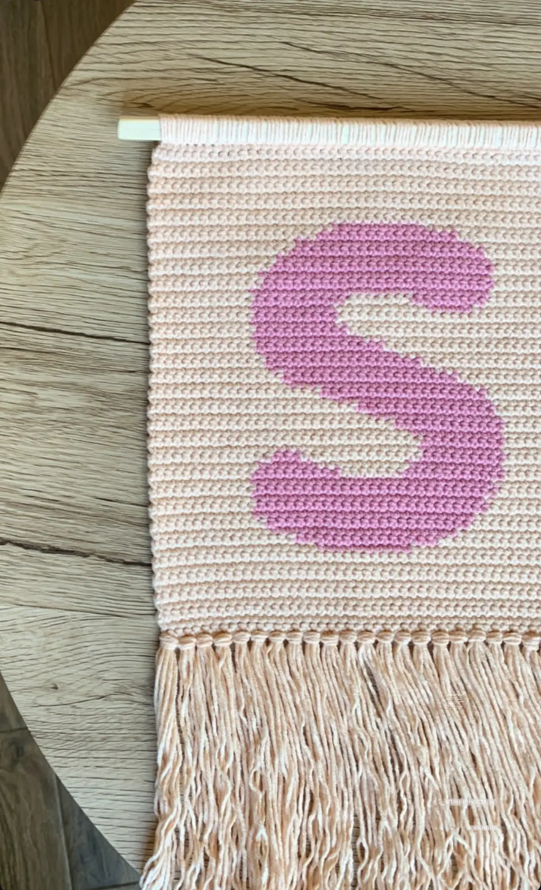

My works


🔄
Summer Bags
- Light & Casual (Boho Style)
Handwoven Raffia Summer Bag
Bring effortless charm to your summer wardrobe with this handwoven raffia bag
- Natural & Elegant (Minimal Style)
Natural Raffia Tote
Crafted from eco-friendly raffia, this summer tote combines texture and function.
- Playful & Warm (Lifestyle Blog Tone)
Sun Days Raffia Bag
Made for long lunches and barefoot walks, this raffia bag is your go-to for every
sun-drenched plan. It’s roomy, soft to the touch, and pairs with every linen dress
you
own.


🔄
Winter socks
- Warm & Comforting (Classic Style)
Hand-Knit Winter Socks
Made from soft, breathable yarn,
each pair is crafted with care to keep you cozy during the coldest days.
- Practical & Inviting (Minimalist)
Essential Winter Wool Socks
Stay warm, naturally. Designed to last — and feel better with every wear.
- Sophisticated & Natural (Eco-conscious)
Sustainable Handcrafted Socks
Crafted from ethically sourced wool and plant-dyed threads, these socks are a blend of
function and sustainability. A mindful choice for those who value warmth, craftsmanship,
and
conscious living.
Clothes
- Handmade Knitted Products.
- Knitted products
are crafted with care, creativity, and
attention to detail.
- From cozy scarves and hand-knit hats to stylish sweaters and mittens, these
items combine functionality with charm.
- Made from quality yarns—often
natural fibers like wool, cotton, or alpaca—knitted handmade
products offer superior warmth, softness, and durability.


🔄
Decoration
-
Handmade Decoration Products
-
Bring warmth and character into your space with a collection of handmade
decorations. Each piece is crafted with care using natural materials, traditional
techniques, and a touch of modern charm.
-
From rustic wall art to delicate table ornaments, my creations add a unique, personal
feel to any home. Perfect for gifts, seasonal decor, or simply making everyday
moments beautiful.